MES PROJETS
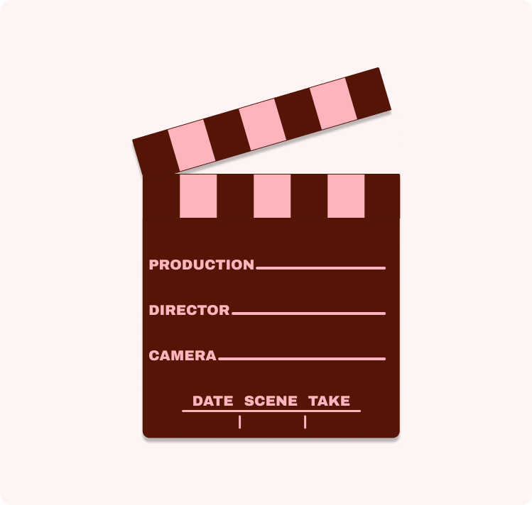
Court métrage
Le portail des saveurs
septembre 2025 - janvier 2026
Interview
Interview du journaliste Guillaume Goubert
octobre 2024 - janvier 2025
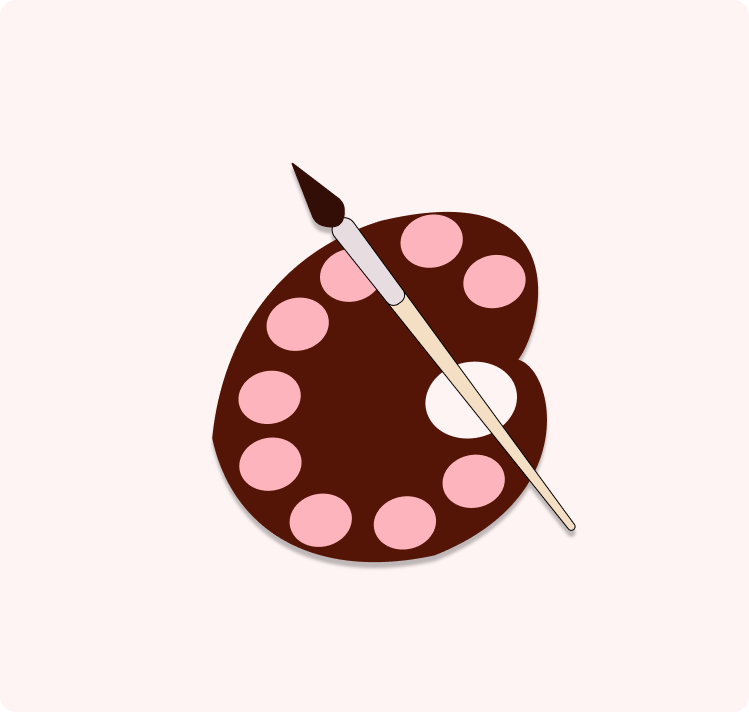
Graphisme & Design Ux / Ui
Refonte d'un site web
novembre 2025
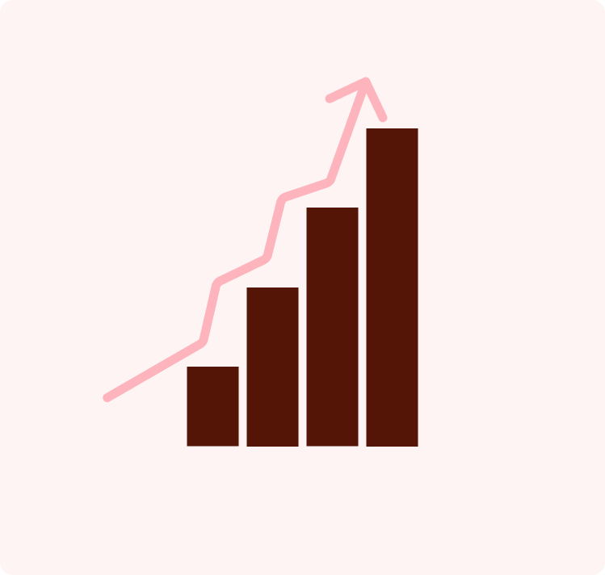
Data Visualisation
Singing For The Stats
septembre 2025 - novembre 2025
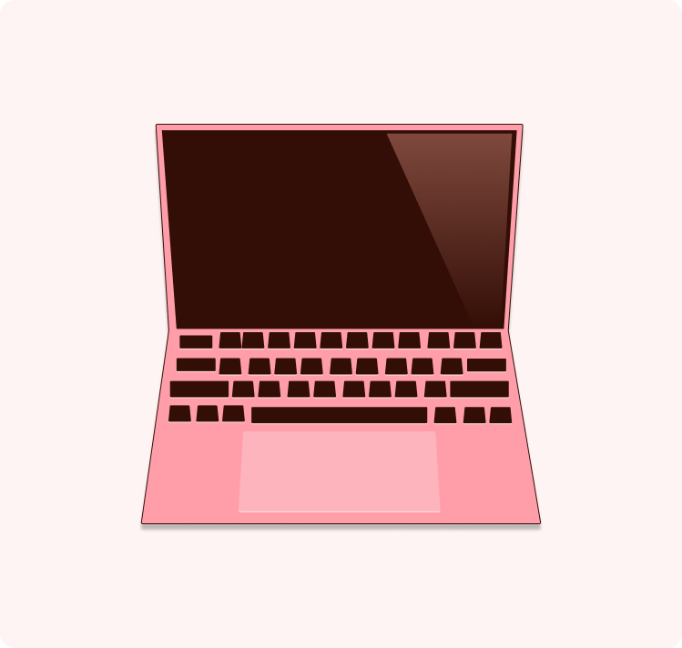
Site web inventaire
Webinventory
février 2025 - mai 2025
Court-métrage - Le portail des saveurs
Dans le cadre d'un projet académique en groupe, j'ai pu réaliser un court-métrage dans le but d’incruster une personne dans un fond vert
septembre 2025 - janvier 2026

Le Portail des Saveurs est un court-métrage réalisé dans le cadre d’un projet académique de groupe,
explorant l’incrustation sur fond vert, en choisissant en fond vert le monde de Charlie et la
Chocolaterie. Mon court-métrage met en scène une jeune femme qui bascule d’un monde réel, filmé en noir et
blanc, vers un univers imaginaire coloré. L’incrustation, le montage et le design sonore servent la
transition entre ces deux mondes, en jouant sur
le contraste visuel et sensoriel.
Ce projet m’a permis de développer des compétences en tournage, en incrustation sur fond vert, montage
vidéo et à l’utilisation d’un stabilisateur Osmo. Ce projet est particulièrement important pour moi, car
il m’a permis de renforcer mes compétences en montage vidéo et de découvrir le travail d’incrustation sur
fond vert dans le cadre d’un court-métrage.
Logiciels et outils
Premiere Pro, After Effects
Compétences
Tournage vidéo, montage, incrustation sur fond vert, design son

Choix du film
En équipe, nous avons choisi ce film car c’est un univers qui nous plaisait à toutes. Il propose de
nombreuses séquences exploitables et visuellement riches pour l’incrustation. Les plans étant relativement
longs, cela nous a offert une grande liberté créative et plusieurs possibilités de mise en scène.
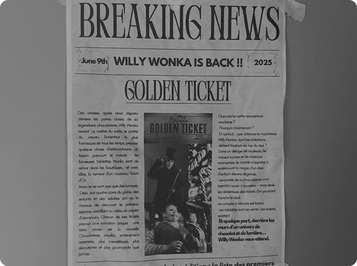
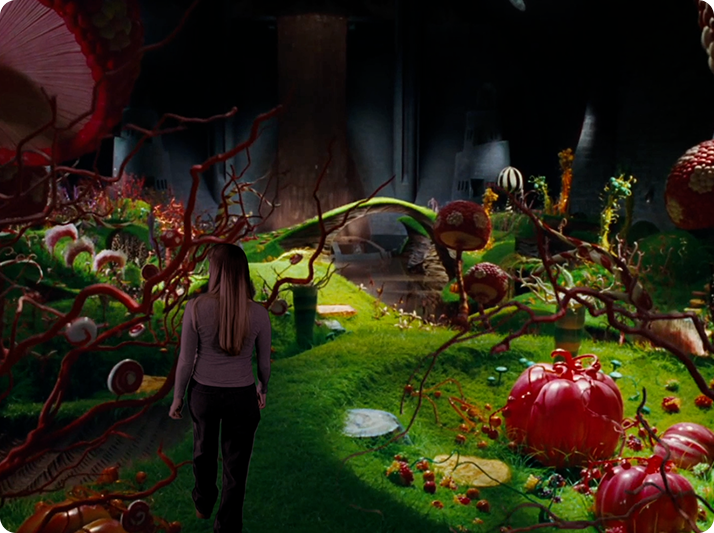
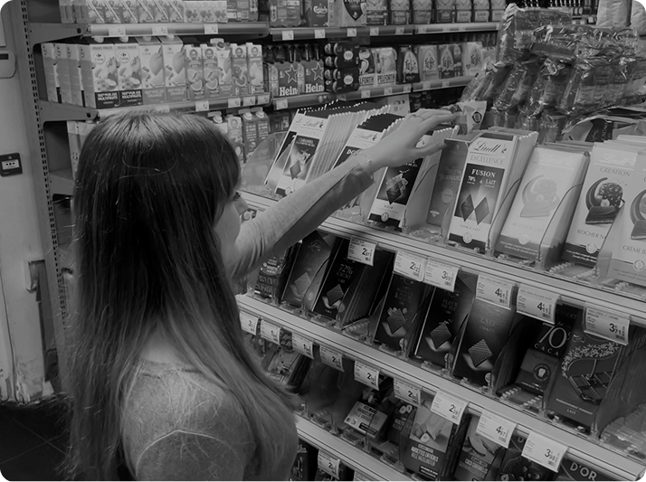
Le montage
J’ai mis un effet noir et blanc à l’image grâce à l’effet Couleur Lumetri, en conservant uniquement le
ticket d’or en couleur, dans le but de diriger le regard du spectateur vers cet élément clé, ansi qu’une
voix off dans l’objectif de représenter un monologue intérieur.
Interview - Guillaume Goubert
Dans le cadre d'un projet académique en groupe, j'ai pu réaliser une interview du journaliste retraité Guillaume Goubert (journal "La Croix")
octobre 2024 - janvier 2025

Le projet consistait à réaliser l’interview d’un journaliste. En groupe, nous avons choisi d’interviewer
Guillaume Goubert, journaliste retraité du journal La Croix, afin de recueillir le point de vue d’un
professionnel expérimenté.
Le tournage a eu lieu à son domicile, dans un cadre chaleureux et adapté à l’interview. J’étais en
charge
de l’installation du matériel (lumières, caméra, son) et du contrôle de la qualité sonore durant le
tournage.
Chaque membre du groupe a ensuite réalisé un montage individuel à l’aide des logiciels utilisés au
cours
de l’année. Ce projet m’a vraiment plu car il m’a permis de découvrir le monde de l’audiovisuel et
d’acquérir des compétences en montage vidéo et en tournage.
Logiciels et outils
Premiere Pro, After Effects
Compétences
Tournage vidéo, montage, incrustation sur fond vert, design son
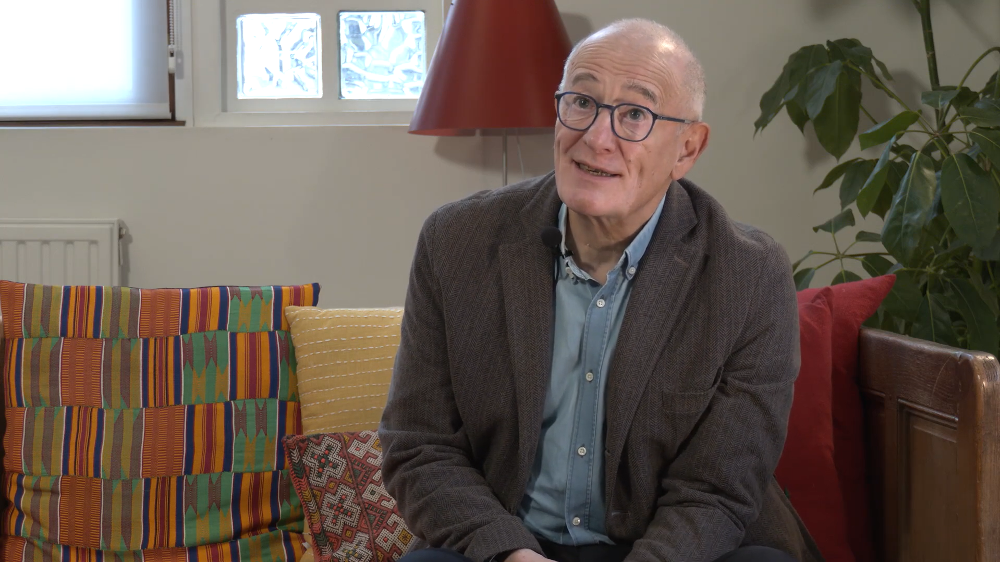
La direction artistique
Mon intention était de recréer une forme de narration journalistique : quelque chose de simple, neutre
et factuel, tout en conservant une atmosphère authentique et un angle plus personnel, mettant en avant les
expériences et les souvenirs du journaliste.
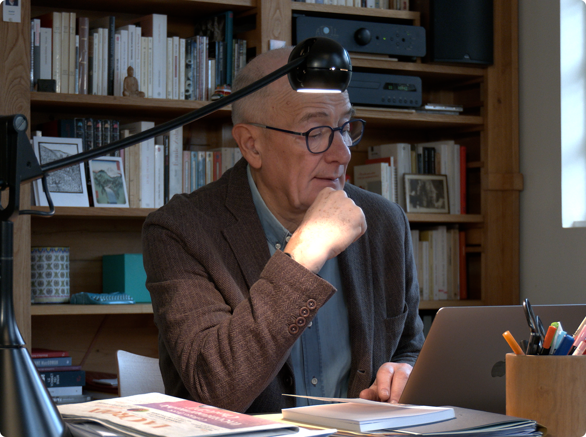
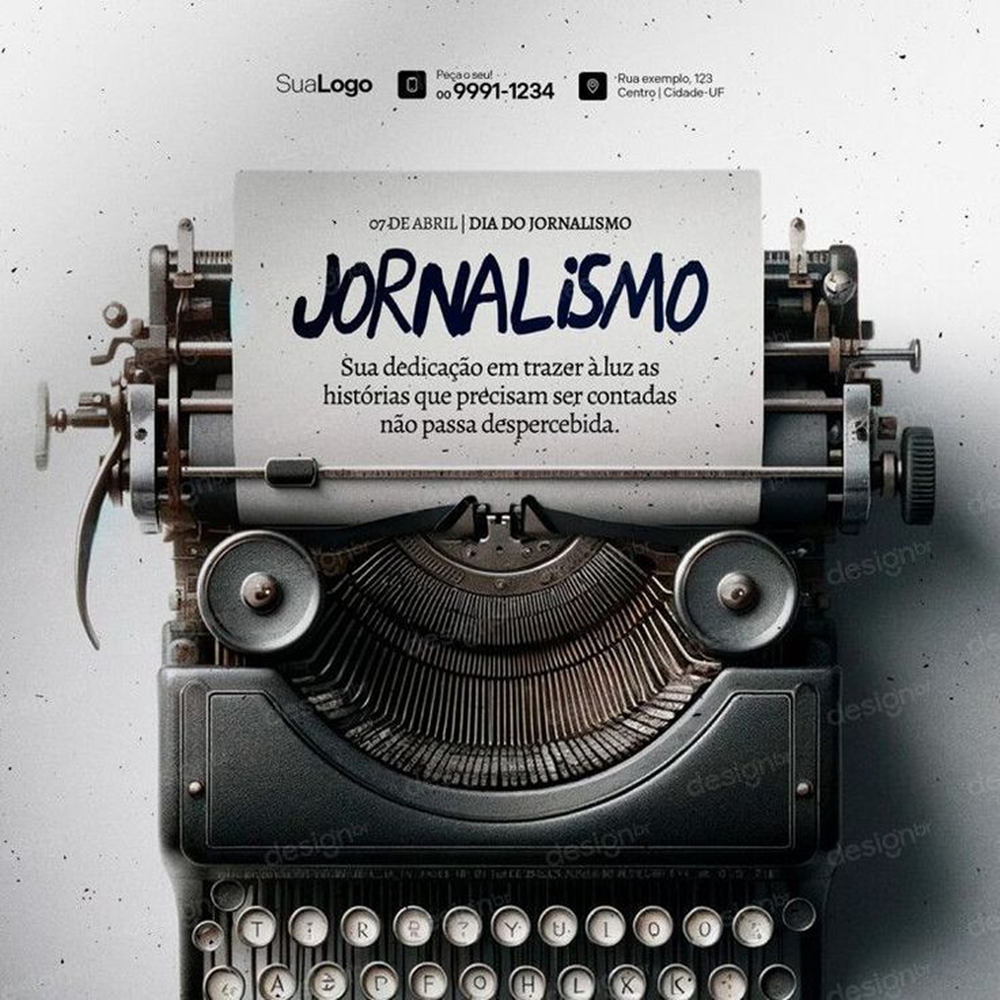
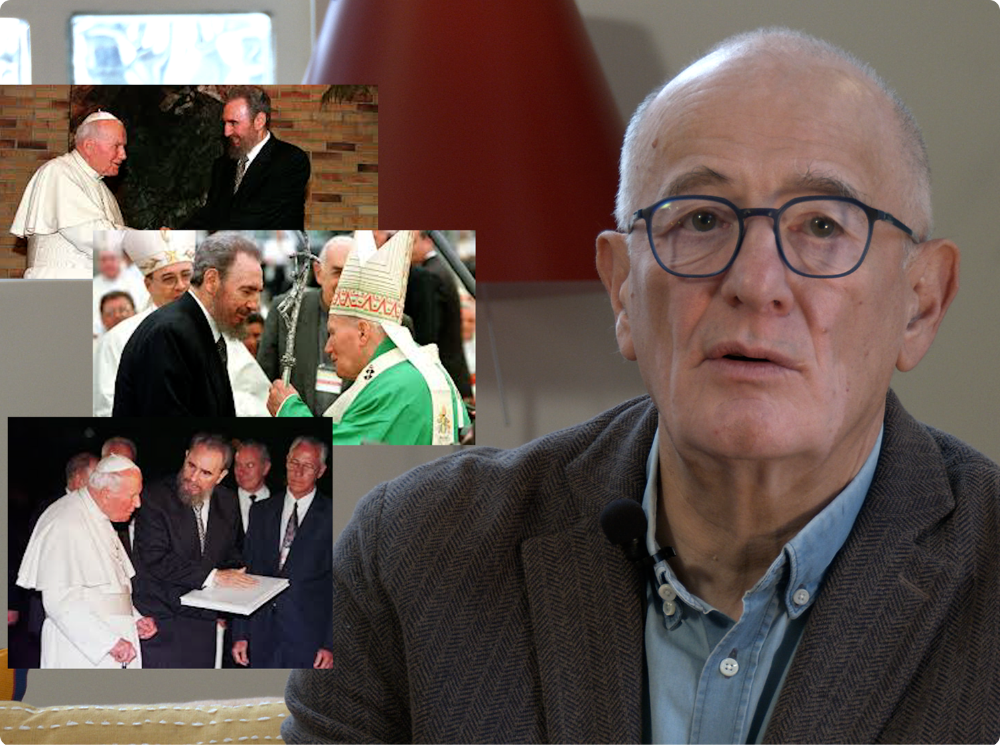
Le montage
Pour rendre l’interview plus “vivante”, j’ai mis des transitions grâce à Premiere Pro, puis j’ai rajouté
une musique de fond et des effets sonores (bruits de machine à écrire) et des éléments évoquant le passé
(machine à écrire, archives INA…).

Graphisme & Design Ux / Ui - Refonte d’un site web
Dans le cadre d'un projet académique en groupe, j'ai pu réaliser la refonte du site web de l’équipe de basket de Nanterre
novembre 2025
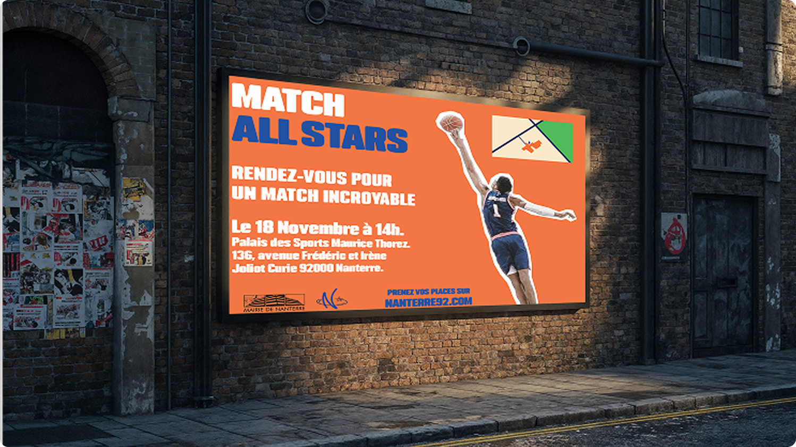
L’objectif de ce projet était de valoriser un événement d’une ville de notre choix. Nous avons sélectionné le Match All Stars du club de basket de Nanterre. Le projet consistait à concevoir une identité visuelle complète, incluant la création d’une interface web responsive pour le site du club à l’aide de maquettes réalisées sur Figma. Nous avons également développé différents supports de communication, à la fois numériques et imprimés (affiches et bannières web de formats variés), repensé le logo du club et conçu une carte interactive mettant en avant les lieux clés situés autour du club. Ce projet s’est révélé particulièrement enrichissant, notamment pour l’apprentissage des principes et techniques du design UX/UI, et plus spécifiquement du design responsive, visant à offrir une expérience utilisateur optimale sur des écrans de tailles variées.
Logiciels et outils
Figma, Photoshop, Indesign, Illustrator
Compétences
Maquettage, graphisme, design & conception Ux / Ui
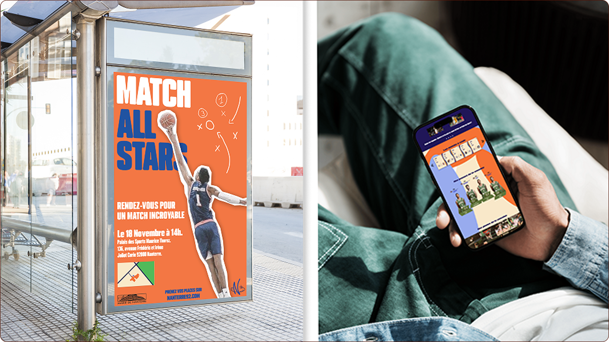
Pour redéfinir entièrement l’identité visuelle du club, nous avons choisi de modifier la palette de couleurs initiale, vert et blanc, pour adopter une combinaison de bleu et d’orange. L’orange, faisant écho au ballon de basket, a été mise en avant afin de renforcer l’identité sportive du projet. Lors de la conception des maquettes, nous avons conservé certains éléments du site original, notamment les photographies de matchs et de joueurs, afin d’assurer une continuité visuelle avec l’univers existant du club.
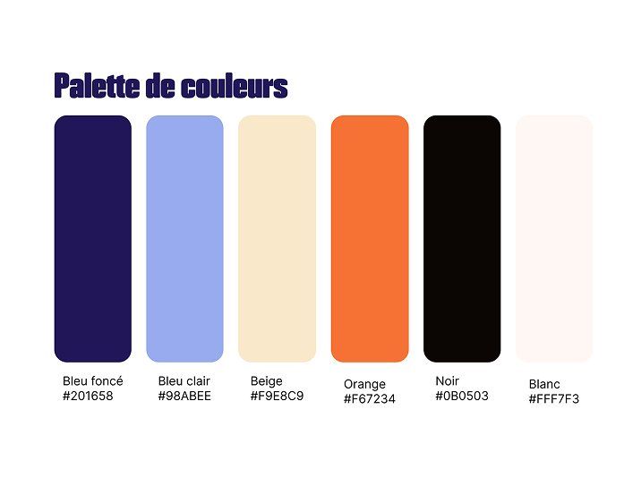
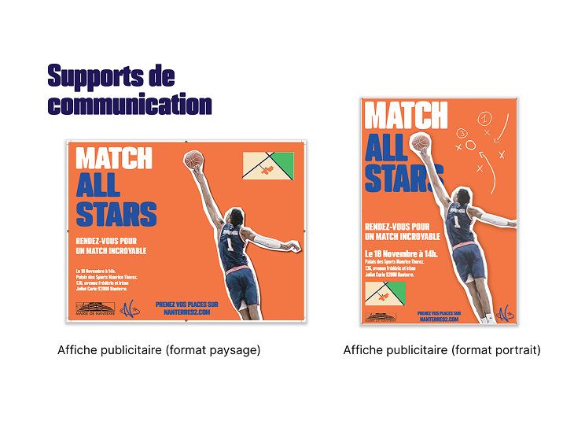
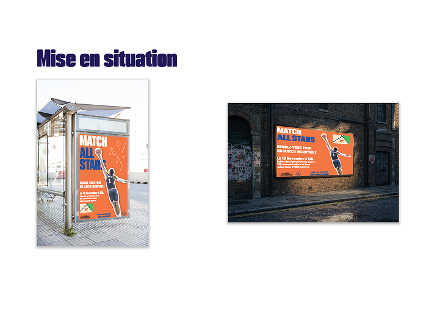
Après avoir contribué à l’élaboration du moodboard (choix des couleurs, des visuels et des typographies), j’ai été en charge de la réalisation des bannières web en trois formats différents, ainsi que de la création de mockups adaptés aux supports ordinateur, tablette et mobile.
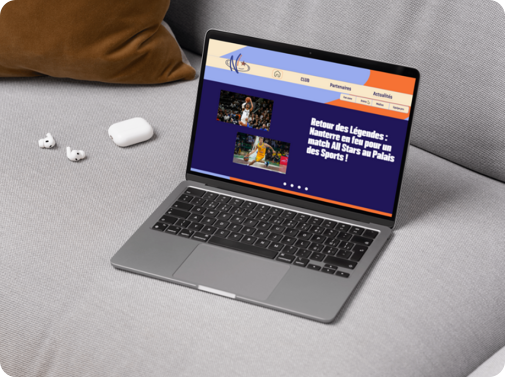
Data Visualisation - Singing For The Stats
Dans le cadre d'un projet académique en groupe, j'ai pu réaliser un site web de Data Visualisation sur l’industrie musicale
septembre 2025 - novembre 2025
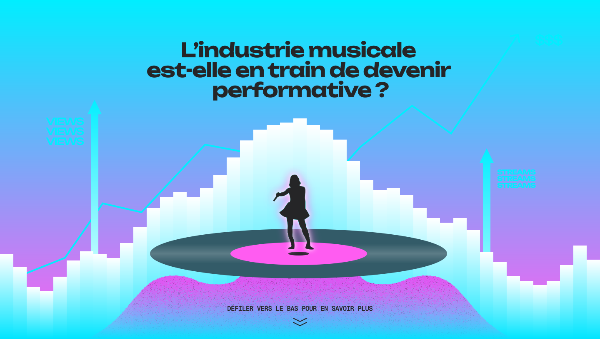
L’objectif de ce projet est de concevoir une page web dédiée à la visualisation de données afin d’analyser et de présenter l’évolution d’un phénomène de manière claire, attractive et impactante. Le thème choisi est la musique, à travers trois axes d’analyse : l'évolution de la durée moyenne d’une chanson, l'évolution du nombre de featurings et l’impact de Tiktok sur l’industrie musicale. Ce sujet, universel et actuel, s’est imposé naturellement par sa capacité à parler à un large public. Ce projet m’a permis de découvrir les principes de la datavisualisation, de concevoir des graphiques interactifs et de travailler sur un design soigné, alliant esthétique et lisibilité de l’information, mais également à améliorer mes compétences en développement web front.
Logiciels et outils
Vscode, Github, Figma
Compétences
Développement web front, hébergement sur GitHub, web design, maquettage
Langages
HTML, CSS, Javascript
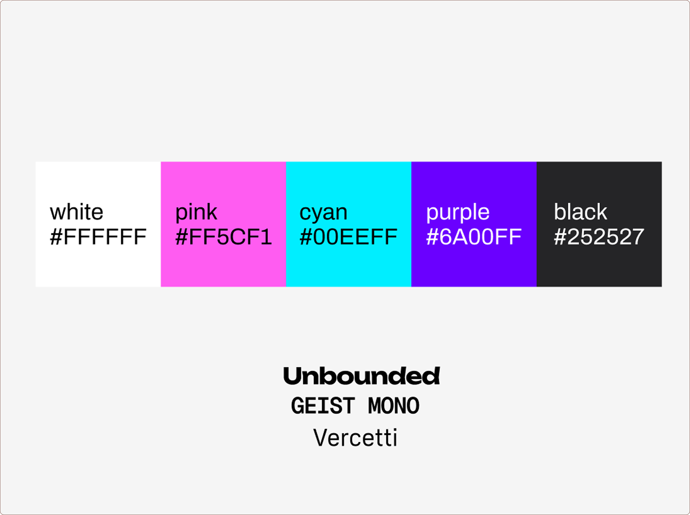
L'esthétique du site est orienté vers un univers inspiré du studio d’enregistrement, avec des couleurs
néon rappelant les logiciels de production musicale et des graphiques évoquant des éléments emblématiques
du son (boutons de réglage de volume ou des molettes d’autotune). Nos intentions visuelles ont été
réalisées sur une page Figma collaborative regroupant la charte graphique et les types de visualisations
envisagées. Nous a ensuite permis de concevoir la maquette complète du site web.
Voir
la maquette Figma
J’ai pris en charge la réalisation du graphique de la partie consacrée à l’impact de TikTok sur l’industrie musicale. Après avoir sélectionné les données pertinentes, j’ai conçu le design du graphique sur Figma, puis je l’ai développé à l’aide de Chart.js, une bibliothèque open source de visualisation de données en JavaScript. Le site a été développé en HTML et CSS pour l’aspect visuel, en JavaScript pour les interactions et le fonctionnement des graphiques, puis hébergé sur GitHub.

Site web inventaire - Webinventory
Dans le cadre d'un projet académique individuel, j'ai pu développer un site web inventaire de destinations de voyages
février 2025 - mai 2025
Dans le cadre d'un projet académique individuel, j'ai pu développer un site web dans le but de répertorier des éléments de notre choix. Le nom de mon site est Mappy (un mélange entre Map + Happy). Le but du projet était de faire un inventaire sur le sujet de notre choix, certains l’ont fait sur la nourriture, d’autres sur la musique, puis moi j’ai décidé de choisir les destinations de voyage. Dans mon site web je propose des destinations de voyage selon la période idéale, les activités souhaitées et le continent. J’ai choisi ce thème car voyager un peu partout dans le monde. Grâce à ce projet j’ai découvert le langage Php et à utiliser une base de donnée PhpMyAdmin, mais également d’améliorer mes compétences avec les langages HTML, Css et JavaScript. Ce projet a été riche en défis et il illustre ma capacité à savoir utiliser les langages afin de développer un site web.
Logiciels et outils
VsCode, O2Switch, PhpMyAdmin
Compétences
Développement front et back, hébergement d’un site, Web Design
Langages
HTML, CSS, Javascript, Php, MySql
À l’aide de phpMyAdmin, j’ai créé ma base de donnée dans laquelle j’ai mis tous les informations nécessaires, puis avec php j’ai intégré et connecté ma base de donnée à mon site en codant afin d’afficher les éléments de ma base sur mon site web. Le JavaScript m’a servi à filtrer les pays, continents, à créer des popup et les afficher, et un carrousel dans la page d’accueil. J’ai également mis en place un formulaire qui permet d’ajouter une destination et à l’envoi du formulaire la destination s’affiche dans la page d’accueil. Ce projet a présenté de nombreux enjeux, j’ai dû m’adapter à un tout nouveau langage de code et j’ai pu démontré mes compétences techniques. De nombreuses compétences en développement web ont été acquises grâce à ce projet.
RECOMMANDATIONS
Amal
Étudiante en BUT MMI
Projets : Court Metrage, Refonte web et DataViz
Kelly étant mon binôme depuis 1 an et demi, j'ai pu travailler avec elle sur ce nombreux projets. Créative et motivée, elle fait toujours en sorte de donner le meilleur d'elle-même.
Suhita
Étudiante en BUT MMI
Projet du semestre 1
Apporte une touche d’humour tout en restant sérieuse, Kelly est une personne qui propose de très bonnes idées qui sont toutes originales.
Maëlys
Étudiante en BUT MMI
Projet : Court Métrage
Kelly est une personne avec qui le travail est hyper agréable. Elle est régulière, forte de propositions et sérieuse. J’ai aimé réaliser des projets avec elle.